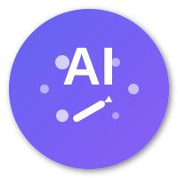

⚙️ API设置
小牛翻译API设置
请输入您的小牛翻译API密钥。API密钥将安全地存储在您的浏览器中，不会上传到服务器。
API密钥
🗑 清除密钥
不设置API
保存

AI艺术工坊
v3.0
onkeydown="handleKeyPress(event)" >
按Enter快速生成
🤖 AI增强提示词
让AI帮你优化和扩展创意
画质增强标签（点击选择，建议-3个）
艺术杰作
最佳质量
高分辨率
超精细细节
8K超高清
专业光效
电影光效
戏剧光效
工作室光效
柔和光效
负面提示词（告诉AI不要生成什么）
使用英文逗号分隔多个词
低质量, 模糊, 变形, 扭曲, 低分辨率, 草图, 不完整, 水印
图片尺寸 (分辨率)
1024x1024 (1:1 正方形)
1280x720 (16:9 横屏 HD)
1920x1080 (16:9 横屏 Full HD)
720x1280 (9:16 竖屏 HD)
1080x1920 (9:16 竖屏 Full HD)
生成数量
生成 1 张
生成 2 张
生成 4 张
高级参数设置
图像生成模型
选择不同的图像生成模型。Flux为标准模型，质量高速度适中；Turbo为快速模型，生成速度快；GPT Image为创意模型，创意性强。
Flux (标准模型 - 高质量)
Turbo (快速模型 - 生成快)
GPT Image (创意模型)
随机种子
种子值决定图像的初始随机状态。使用相同的种子值和参数可以生成相似的图像。留空则每次生成随机种子。记录喜欢的图像的种子值可以帮助您重现类似效果
🎨 生成图片
灵感库
Admin Panel
Login
Sitemap
Do Not Follow
关键词图像生成器
密钥设置
提示词输入